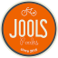
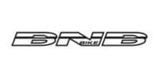

Fietsen Kris – Fietsenmaker Beernem
Welkom bij Fietsen Kris, dé specialist in fietsen en herstellingen in Beernem.
Fietsen Kris
Ons Aanbod
Contact
Onze Merken


Tweedehands Fietsen Bij Fietsenmaker Kris